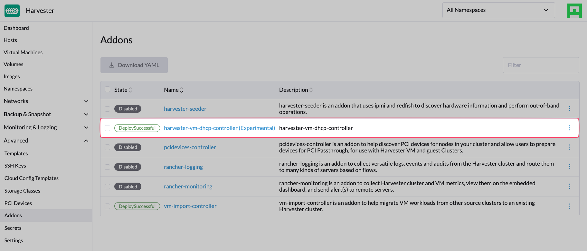

|
Este documento foi traduzido usando tecnologia de tradução automática de máquina. Sempre trabalhamos para apresentar traduções precisas, mas não oferecemos nenhuma garantia em relação à integridade, precisão ou confiabilidade do conteúdo traduzido. Em caso de qualquer discrepância, a versão original em inglês prevalecerá e constituirá o texto official. |
Controlador DHCP VM (Experimental)
|
harvester-vm-dhcp-controller é um complemento experimental. Não está incluído no ISO, mas você pode baixá-lo do |
Você pode configurar informações do pool de IP e fornecer endereços IP para VMs em execução em clusters SUSE Virtualization usando o recurso DHCP Gerenciado embutido. Esse recurso, que é uma alternativa ao servidor DHCP autônomo, utiliza o vm-dhcp-controller complemento para simplificar a implantação do cluster de convidados.
|
SUSE Virtualization utiliza a rede de infraestrutura planejada, portanto, você deve garantir que a conectividade de rede esteja disponível e planejar os pools de IP com antecedência. |
Recursos exclusivos
-
As concessões DHCP são armazenadas no etcd como a única fonte de verdade em todo o cluster.
-
Cada uma das concessões é estática por natureza e funciona bem com sua infraestrutura de rede atual.
-
Os agentes DHCP Gerenciados ainda podem atender a solicitações DHCP para entidades existentes, mesmo que o plano de controle do cluster pare de funcionar, garantindo que a rede da carga de trabalho da sua máquina virtual permaneça disponível.
Limitações
-
O recurso DHCP Gerenciado funciona apenas com as interfaces de rede especificadas nos
VirtualMachineCRs. Interfaces de rede criadas na máquina virtual não são suportadas. -
Endereços IP não são alocados ou desalocados quando você adiciona ou remove interfaces de rede após a criação da máquina virtual. Os endereços MAC reais são registrados nos
VirtualMachineNetworkConfigCRs. -
A operação DHCP RELEASE atualmente não é suportada.
-
As atualizações de configuração do pool de IP entram em vigor apenas após você reiniciar manualmente os pods de agente relevantes.
Instalando e habilitando o complemento
Você pode instalar o complemento executando o seguinte comando:
kubectl apply -f https://raw.githubusercontent.com/harvester/experimental-addons/main/harvester-vm-dhcp-controller/harvester-vm-dhcp-controller.yaml|
O complemento não pode detectar dinamicamente CIDRs de serviço específicos do cluster e usa Quando seu cluster usa um CIDR de serviço diferente, você deve configurá-lo explicitamente na seção Exemplo: Você pode verificar o CIDR de serviço do seu cluster usando o seguinte comando: |
Após a instalação, ative o complemento na tela Dashboard da interface SUSE Virtualization ou usando a ferramenta de linha de comando kubectl.

Usando o complemento
-
Na tela Dashboard da interface, crie uma Rede de VM.

-
Crie um objeto
IPPoolusando a ferramenta de linha de comando kubectl.cat <<EOF | kubectl apply -f - apiVersion: network.harvesterhci.io/v1alpha1 kind: IPPool metadata: name: net-48 namespace: default spec: ipv4Config: serverIP: 192.168.48.77 cidr: 192.168.48.0/24 pool: start: 192.168.48.81 end: 192.168.48.90 exclude: - 192.168.48.81 - 192.168.48.90 router: 192.168.48.1 dns: - 1.1.1.1 leaseTime: 300 networkName: default/net-48 EOF -
Crie uma VM que esteja conectada à Rede de VM que você criou anteriormente.

-
Aguarde a criação do objeto
VirtualMachineNetworkConfigcorrespondente e a aplicação do endereço MAC da interface de rede da VM ao objeto. -
Verifique o campo
.statusdos objetosIPPooleVirtualMachineNetworkConfig, e verifique se o endereço IP está alocado e atribuído ao endereço MAC.$ kubectl get ippools.network net-48 -o yaml apiVersion: network.harvesterhci.io/v1alpha1 kind: IPPool metadata: creationTimestamp: "2024-02-15T13:17:21Z" finalizers: - wrangler.cattle.io/vm-dhcp-ippool-controller generation: 1 name: net-48 namespace: default resourceVersion: "826813" uid: 5efd44b7-3796-4f02-947e-3949cb4c8e3d spec: ipv4Config: cidr: 192.168.48.0/24 dns: - 1.1.1.1 leaseTime: 300 pool: end: 192.168.48.90 exclude: - 192.168.48.81 - 192.168.48.90 start: 192.168.48.81 router: 192.168.48.1 serverIP: 192.168.48.77 networkName: default/net-48 status: agentPodRef: name: default-net-48-agent namespace: harvester-system conditions: - lastUpdateTime: "2024-02-15T13:17:21Z" status: "True" type: Registered - lastUpdateTime: "2024-02-15T13:17:21Z" status: "True" type: CacheReady - lastUpdateTime: "2024-02-15T13:17:30Z" status: "True" type: AgentReady - lastUpdateTime: "2024-02-15T13:17:21Z" status: "False" type: Stopped ipv4: allocated: 192.168.48.81: EXCLUDED 192.168.48.84: ca:70:82:e6:84:6e 192.168.48.90: EXCLUDED available: 7 used: 1 lastUpdate: "2024-02-15T13:48:20Z"$ kubectl get virtualmachinenetworkconfigs.network test-vm -o yaml apiVersion: network.harvesterhci.io/v1alpha1 kind: VirtualMachineNetworkConfig metadata: creationTimestamp: "2024-02-15T13:48:02Z" finalizers: - wrangler.cattle.io/vm-dhcp-vmnetcfg-controller generation: 2 labels: harvesterhci.io/vmName: test-vm name: test-vm namespace: default ownerReferences: - apiVersion: kubevirt.io/v1 kind: VirtualMachine name: test-vm uid: a9f8ce12-fd6c-4bd2-b266-245d8e77dae3 resourceVersion: "826809" uid: 556440c7-eeeb-4daf-9c98-60ab39688ba8 spec: networkConfig: - macAddress: ca:70:82:e6:84:6e networkName: default/net-48 vmName: test-vm status: conditions: - lastUpdateTime: "2024-02-15T13:48:20Z" status: "True" type: Allocated - lastUpdateTime: "2024-02-15T13:48:02Z" status: "False" type: Disabled networkConfig: - allocatedIPAddress: 192.168.48.84 macAddress: ca:70:82:e6:84:6e networkName: default/net-48 state: Allocated -
Verifique o console serial da VM e confirme se o endereço IP está configurado corretamente na interface de rede (via DHCP).

Pods e CRDs
Quando o complemento está ativado, os seguintes tipos de pods são executados:
-
Controlador: Reconcila objetos CRD para determinar a alocação e o mapeamento entre endereços IP e MAC. Os resultados são persistidos nos objetos
IPPool. -
Webhook: Valida e atualiza objetos CRD ao receber solicitações (criação, atualização e exclusão).
-
Agente: Atende solicitações DHCP e garante que o armazenamento interno de concessões DHCP esteja atualizado. Isso é realizado sincronizando o objeto
IPPoolespecífico com o qual o agente está associado. Agentes são gerados sob demanda sempre que você cria novos objetosIPPool.
O complemento introduz os seguintes novos CRDs:
-
IPPool(ippl) -
VirtualMachineNetworkConfig(vmnetcfg)
IPPool CRD
O IPPool CRD permite que você defina informações do pool de IPs. Você deve mapear cada objeto IPPool para um objeto NetworkAttachmentDefinition (NAD) específico, que deve ser criado previamente.
|
Múltiplos CRDs chamados |
Exemplo:
apiVersion: network.harvesterhci.io/v1alpha1
kind: IPPool
metadata:
name: example
namespace: default
spec:
ipv4Config:
serverIP: 192.168.100.2 # The DHCP server's IP address
cidr: 192.168.100.0/24 # The subnet information, must be in the CIDR form
pool:
start: 192.168.100.101
end: 192.168.100.200
exclude:
- 192.168.100.151
- 192.168.100.187
router: 192.168.100.1 # The default gateway, if any
dns:
- 1.1.1.1
domainName: example.com
domainSearch:
- example.com
ntp:
- pool.ntp.org
leaseTime: 300
networkName: default/example # The namespaced name of the NAD objectApós a criação do objeto IPPool, o processo de reconciliação do controlador inicializa o módulo de alocação de IP e gera o pod do agente para a rede.
$ kubectl get ippools.network example
NAME NETWORK AVAILABLE USED REGISTERED CACHEREADY AGENTREADY
example default/example 98 0 True True TrueVirtualMachineNetworkConfig CRD
O VirtualMachineNetworkConfig CRD se assemelha a uma solicitação de emissão de endereço IP e está associado a objetos NetworkAttachmentDefinition (NAD).
Um objeto VirtualMachineNetworkConfig de exemplo se parece com o seguinte:
apiVersion: network.harvesterhci.io/v1alpha1
kind: VirtualMachineNetworkConfig
metadata:
name: test-vm
namespace: default
spec:
networkConfig:
- macAddress: 22:37:37:82:93:7d
networkName: default/example
vmName: test-vmApós a criação do objeto VirtualMachineNetworkConfig, o controlador tenta recuperar uma lista de endereços IP não utilizados do módulo de alocação de IP para cada endereço MAC registrado. O mapeamento IP-MAC é então atualizado no objeto VirtualMachineNetworkConfig e nos objetos IPPool correspondentes.
|
A criação manual de objetos |